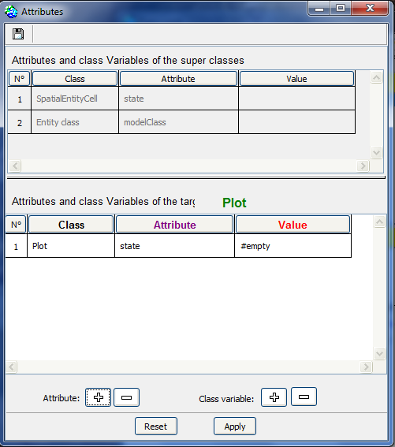
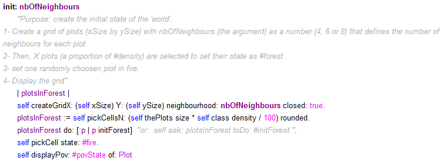
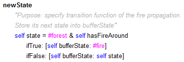
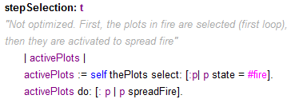
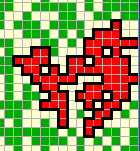
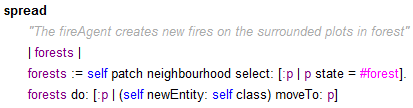
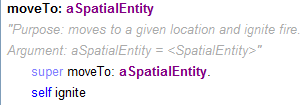

|
Demo_FireCellular automata of a forest fireChristophe Le Page, Francois Bousquet, Pierre Bommel (Cirad) PurposeThis model illustrates how the principles of cellular automata are implemented in Cormas. The spatial entity of the model (the cell, here named Plot), can take four states: #fire (red); #forest (green); #ash (grey); #empty (white). The initial state of each cell of the spatial grid is either set to #forest with a probability p or to #empty with a probability 1-p. At the beginning, one cell is set on fire, and then the spreading of the fire, defined in the cell transition function, occurs. The transition function is the following: a cell being a forest at time t-1 will turn on fire at time t if at least one of its 4 neighbours (North, East, South, West) is on fire at time t-1. The cells being on fire will become ash at the next timestep, the cells being ash will become empty at the next timestep.
The probability to observe a resteint fire is high if p is lower than 0.55, whereas when p is greater than 0.55, a global fire is likely to occur. This "percolation" threshold characterizes cellular automata which are representing diffusion processes. See also (if you enjoy movie !) the animation made from a 100 x 100 spatial grid (p = 0.58). The following four versions describe four different ways to
implement a fire diffusion model on a grid.
Version 1 : standard cellular automata** Select Fire_1_CA.pcl version from Demo_Fire ** This version provides a standard version of a cellular automaton. Here, only one class is created (Plot), subclass of SpatialEntityCell. It already contains two attributes: state and bufferState. Here, we declare #empty as default value:  To create the initial space, select one of the 3 initialization methods : init_4 (which creates a neighborhood space 4), init_6 (neighborhood of 6, or init_8 (neighborhood of Moore). Each of these methods uses the following general initialization:  Note that xSize and ySize have been declared as 2 attributes (with 50 as default) at the model level. For fire dynamics, the #newState method (also called "transition function") must be redefined in the Plot class, as follows :  It is important to note here that the state of the cell is not modified but only its buffer state. For example, in the case of a cell in forest in contact with a fire, this one keeps its state as forest, and it just modifies its buffer state (self bufferState: #fire), so that this cell continues for this turn to be considered by the other cells as still being a forest. At the #step: t method of the scheduler, it is necessary to make a simple call to : self stepSynchronouslyCA: t.The #stepSynchronouslyCA: method is defined at the CormasModel level. It performs 2 complete loops of the whole cells. The 1st loop makes each cell execute the #newState method (without any effective change of state), then during the second loop, the #updateState method is executed. It is only then that the state of the cells is actually changed. Version 2 : propagation from burning cells** Select Fire_2_CAoptimized.pcl version from Demo_Fire **This version supports a fire diffusion only from the burning cells. It is therefore necessary at each time step to select the cells on fire, then to activate for each one the propagation of the fire on its neighbours. Compared to version 1, two methods are added in the Plot class: #ignite (which changes the state of the cell to fire) and #spreadFire (which propagates fire on nearby forest cells). To avoid artifacts related to regular cell scanning, the scheduler must first select the burning cells and then activate their diffusion:  This version also proposes a more optimized procedure that avoids scanning the grid in advance to select only the burning cells (cf. #step: t method). Version 3 : a spatial entity (aggregate) spreads over the cells in the forest** Select Fire_3_FireAggregate.pcl version from Demo_Fire **In this version, fire represents a spatial area that spreads over the cells in forest that border it. This entity is called FireAggregate; it is a subclass of SpatialEntityAggregate. Here, only the FireAggregates entities are activated: self theFireAggregates do: [: f | f spread].Each aggregate then executes the #spread method which consists of the following instruction: self swellConstraint: [: p | p state = #forest].  A fireAggregate entity (displayed with its bold outline)Note that the display of the aggregate outline slows down the simulation. Without this display (pov -> FireAggregate -> #nil), simulations are as fast as in version 2. Version 4 : Fire entities are moving** Select Fire_4_FireEntity.pcl version from Demo_Fire **In this version, entities called FireEntity are created. These are the only entities activated by the scheduler. Considered as active agents, these entities spread by creating new fire entities on neighbouring cells:  The #moveTo: method has been redefined to activate cell ignition when moving:  Version 4b : Fire entities are gradually consumed and then extinguished** Select Fire_5_FireEntityAging.pcl version from Demo_Fire **
|
|